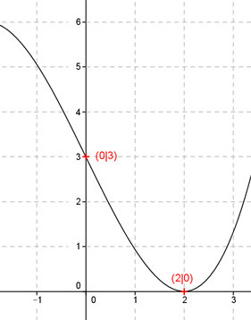

Aufgabe 20 Der Graph einer ganzrationalen Funktion 3. Grades ist punktsymmetrisch zu (0|3) und berührt die x-Achse an der Stelle x = 2. Wie lautet seine Funktionsgleichung?  Punktsymmetrisch zu dem Punkt (0|3), also nicht dem Nullpunkt, bedeutet, die allgemeine Form der Funktion ändert sich zu: f(x) = ax3 + cx + d (nur ungerade Exponenten von x) f’(x) = 3ax2 + c f’’(x) = 6ax 3 Bedingungen: 1. Ist punktsymmetrisch zu (0|3) bedeutet: f(3) = 3 --> a * 03 + c * 0 + d = 3 --> d = 3 2. Berührt die x-Achse an der Stelle x = 2 bedeutet zum einen: (d = 3 eingesetzt) f(2) = 0 --> a * 23 + c * 2 + d = 0 --> 8a + 2c + 3 = 0 I 2. Berührt die x-Achse an der Stelle x = 2 bedeutet zum anderen: f’(2) = 0 --> 3a * 22 + c = 0 --> 12a + c = 0 II I + II * (-2) 8a + 2c = -3 -24a - 2c = 0 ---------------- -16a = -3 |:(-16) a = 0,1875 a = 1 in I eingesetzt: 8 * 0,1875 + 2c + 3 = 0 |-20 4,5 + 2c = 0 |-4,5 2c = -4,5 |:2 c = -2,25 Gesuchte Funktionsgleichung: f(x) = 0,1875x3 - 2,25x + 3